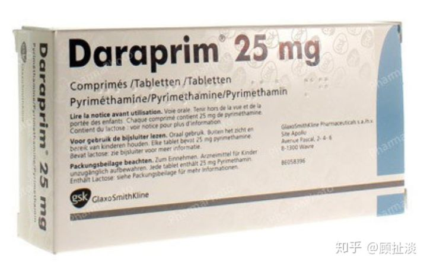
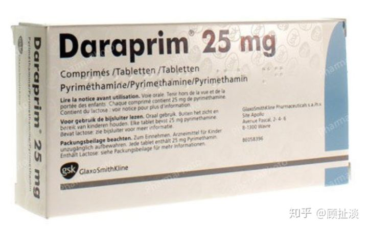
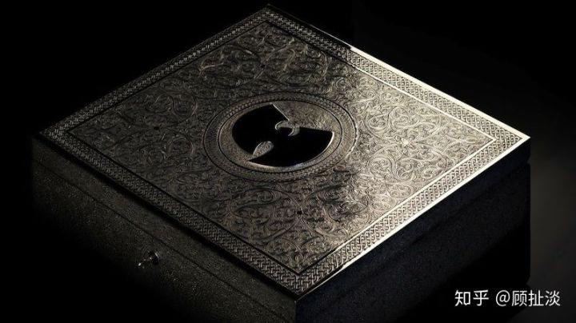
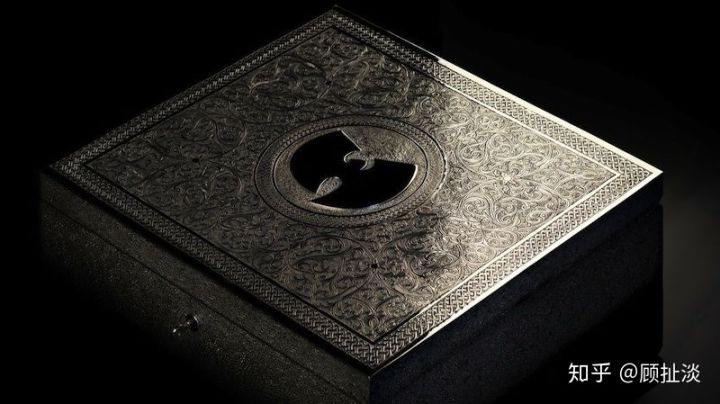

看《我不是药神》想起前几年美国的一个新闻，不知道大家还记得不
就是美国有个制药公司买断了一个专利过期药物的销售权，然后把价格从每片13.5美元涨到了750美元。
 
这个药叫Daraprim，于1953年获得FDA批准生产，主要用户群是免疫系统受损的艾滋病患者，需要多年服用，多的一个月要吃100片，因为因为利润不高，所以技术专利过期市场上也并没类似的替代药物。
整个事情导致全美哗然，各种媒体、医疗机构、美国传染病学会、甚至希拉里、伯尼桑德斯、川普都表示这是挣黑心钱。当时在大选，这是少数两方一起在喷的社会新闻。

而药物公司创始人兼CEO，前对冲基金经理1983年出生的Martin Shkreli表示你们懂个屁，药企不赚钱你们就没有新药物，还在全国各大媒体开嘲讽，说药价还是不够高。

他的观点是有人把阿斯顿马丁卖出了自行车的价格，我去买来然后卖丰田的价格有什么错。我们公司的商业战略是获得非专利药品的许可证，并重新评估每个人的定价，以追求公司利润，就专找这种整体市场需求不大，但没有通用版本，同时有一部分病人必须要用的药来操作。老子干的一切都不犯法，有啥子错，你们这帮没脑子的穷逼眼红什么？
 
为了让嘲讽穷逼他还花了200万美金买了武当派的秘密录制的概念专辑《少林往事》，这张用特殊银盒包装的概念专辑全世界仅发行一张，买完后他在采访时表示自己既不是武当派的歌迷也不是慈善家。单纯就是买了，自己不会去听，也不给喜欢武当派的歌迷听，哈哈哈哈。
于是这个人在当时被称为全美最讨厌的人，美国众议院还传唤他让他给出解释，在众议院委员会面前他行使了沉默权，拒绝回答任何问题。。。

后来FBI表示这个确实不犯法，我们没办法，然后他就因为以前在华尔街时候的两项证券欺诈罪和一项串谋证券欺诈罪而被定罪，判刑7年，罚款740万美元。

目前美国Express Scripts药房和Imprimis制药公司合作，用其他制药法提供了Daraprim的替代药物，售价是99美金一瓶（100片装），釜底抽薪。

440 条评论
武当派的秘密录制的概念专辑《少林往事》……
这个人刚好赶上了美国大选，左右两方正好缺一个能共同喷的人，于是希拉里、桑德斯、杰布布什等一堆大佬开骂，于是就定基调了。
不要把法律当挡箭牌！
艾滋病不是1981年才发现的吗，这个针对的治疗药是1953年研制的？